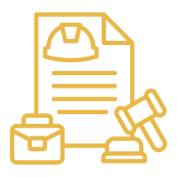

Labor & Employment legal services in Saudi Arabia.
Afdal Mohami's Labor & Employment practice offers comprehensive legal services for the rights of employers and employees in Saudi Arabia, from drafting employment contracts to unfair dismissal and social insurance dispute cases.
Whether you're an employee who feels your statutory rights weren't honored at the end of your service, or an employer needing clear contracts protecting your business, our Labor & Employment practice covers the entire contractual relationship between both parties under Saudi labor law.
We offer general labor and employment cases, and unfair dismissal and end-of-service claims for employees whose services were terminated unjustly. For employers, we help draft employment contracts and review Saudization and Nitaqat compliance. We also handle occupational injury cases and GOSI social insurance disputes.
This practice area serves employees who received a termination notice without a clear reason, employers needing employment contracts that protect their business from future disputes, companies facing scrutiny from the Ministry of Human Resources regarding Saudization ratios, and injured workers needing to understand their compensation rights.
Contact starts with a brief description of your situation, followed by a quick assessment from a lawyer specializing in labor cases, then a plan defining the right path. In unfair dismissal cases, we review the employment contract and termination letter to determine whether there's legal grounds for a claim before approaching the relevant labor authority.
Recurring scenarios include an employee whose services were terminated without notice needing to claim their full entitlements, or an employer needing a clearly-worded employment contract drafted for a new employee. Another common scenario: a worker injured while performing their job needing to understand their compensation rights from social insurance and the employer.
We combine practical understanding of both parties' rights in the employment relationship with up-to-date knowledge of constantly evolving Saudization and social insurance regulations, backed by a commitment to explaining the legal situation honestly to both employee and employer alike.
Delayed wage claims or simple employment contract questions are often resolved with a single consultation or formal claim through the labor platform, while disputed wrongful dismissal cases and serious work injury investigations need extended representation before the labor court. We clarify the most suitable route as soon as we assess your case details.
Any labor case benefits from having the signed employment contract, recent payslips, and any correspondence related to warnings or dismissal. In work injury cases, medical reports and the initial incident report help speed up accurate case assessment.
We represent clients from construction, hospitality and tourism, and industry and manufacturing, where the nature of common labor disputes differs based on the type of work and risks associated with each sector.
A common question from employees: does my wrongful dismissal deserve compensation even if I don't have a written contract? Yes, the actual employment relationship is established through multiple means, not just a written contract. A common question from employers: how do I avoid future dismissal disputes? We always recommend documenting any warning or violation in writing as soon as it occurs, since contemporaneous documentation of the incident is far stronger than any later testimony.
We offer fixed fees for most individual labor cases, noting that the initial consultation is always free to help the worker understand their rights before any financial commitment to us.
Among the most common mistakes employers make: terminating an employee's contract without written documentation of the grounds, weakening the legal position for any later claim. A common mistake from employees: signing an end-of-service settlement without fully understanding all dues owed. We help both sides precisely understand their legal position before making any final decision.
We commit to always offering a free initial consultation to workers, recognizing the financial sensitivity many workers face during disputes with employers, with the same full professional commitment toward employers who retain us in their disputes.
Many employees ask: do my labor rights change if I'm transferred to the company's branch in another city? Basic rights don't change, but some details like relocation and housing allowances may need contract review, and we help you precisely understand the transfer's effect on your employment status before agreeing to any inter-branch transfer.
We recommend both employers and employees document any material change in the employment relationship as soon as it occurs: salary adjustment, job title change, or any disciplinary warning. This continuous documentation protects both parties when any future dispute arises, and makes assessing the legal position faster and more precise.
When a labor dispute involves a group of employees simultaneously, such as restructuring or mass layoff cases, the legal strategy differs fundamentally from an individual dispute. We help companies manage these processes in a way that minimizes legal risk, and help affected employees organize their claims collectively and effectively.
The nature of labor disputes differs fundamentally between sectors: work injury cases are more common in the industrial and construction sectors, while wrongful dismissal disputes spread more in the service sector. We apply this sector-specific understanding in every consultation we provide to ensure precise handling of your dispute's specific nature.
Domestic workers and private professions are subject to different regulations from the general labor system, through the Musaned platform and its competent committees. We help employers and domestic workers understand their rights and obligations within this special regulatory framework.
It depends on the reason for termination and whether the correct statutory procedures were followed; we review your contract and termination letter to determine this precisely.
Material contract terms usually can't be modified without the employee's consent, and we explain your statutory rights on this matter.
You have compensation rights from social insurance and sometimes directly from the employer, and we help you understand and claim these rights.
Yes, we help companies review their localization ratios and status within the Nitaqat program and avoid any potential violations.
The initial consultation is always free; the cost of full representation is set transparently after understanding your file's details.
Reach a licensed lawyer within minutes on WhatsApp — in any city in the Kingdom.
Start your consultation